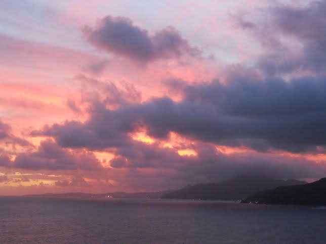
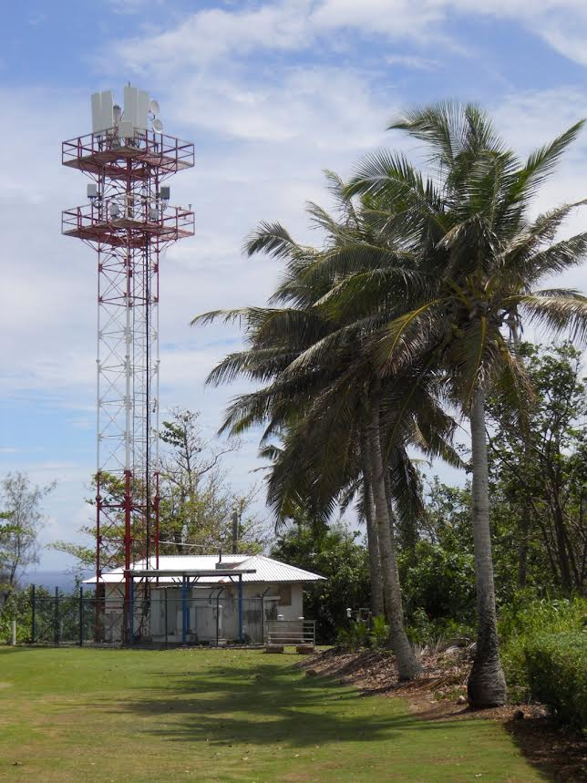
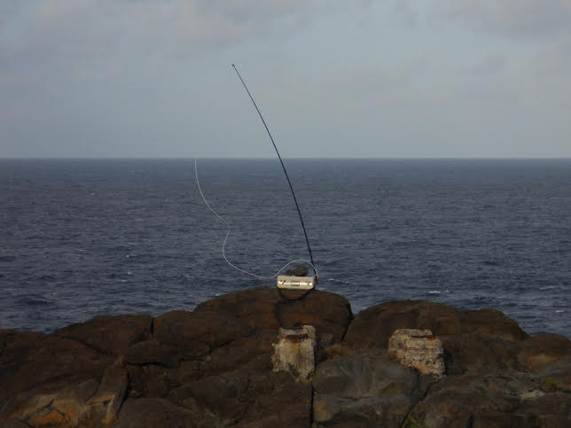
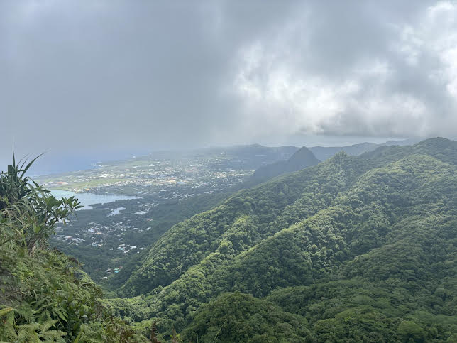
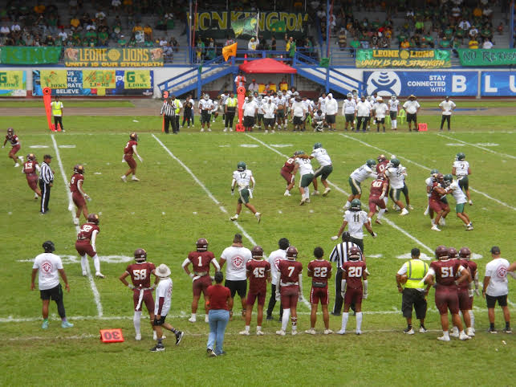
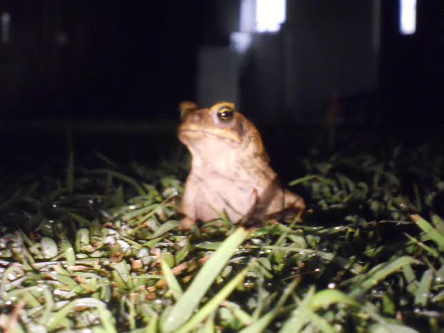
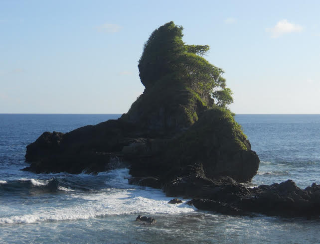

Longren Colorado Newsletter #01 - 27.01.2025 ------------------------------ Hello friends and family, I hope you all have been well as we have gotten into this new year. I've recently been able to settle down here in Boulder, Colorado after a stint of much travel last year. As mentioned last newsletter, I was in American Samoa for a few weeks in November and would like to share with you a bit about my time there. The reason for my travel to the Samoan Islands was to fill in for the station lead, Mike, while he went on vacation. While he was gone, I ran the operations at the American Samoa Observatory (SMO), an atmospheric measurement station. A view of the observatory from the tower. (NOAA) American Samoa is a territory of the United States. The only inhabited US territory in the southern hemisphere, American Samoa is located about halfway between Hawaii and New Zealand. About 50 thousand people live in American Samoa, most of which live on Tutuila, the largest island of the territory. The island of Tutuila, on which the observatory is located. My daily commute from the motel (A) to the observatory (B) is the blue line. (Google Earth - click the map to interact) The commute from my motel in Pago Pago, the capital of American Samoa, to the observatory seems to be a short 25 km (16 mi). However, the fastest speed limit on the island is 25 miles per hour, making the drive take about an hour. Weaving along the coastline, the road from Pago Pago passes through 17 villages before arriving at Tula, the village the observatory resides within.  Sunset on the drive back from the observatory. Established in 1974, the observatory lies on the most eastern part of the island for a reason - the prevalent winds come from the east. That allows for clean winds, free from contaminants, to come right off the ocean and be sampled.  A scientific building lies next to a cell tower. Much of what is done with that clean air is to see what it is made up of. There are a few ways to figure out what is in the air. A couple of the instruments analyze the air immediately, or in- situ, right on station. As well, there are flasks that are used to capture the air. The flasks are then shipped back to Boulder, Colorado to be analyzed there. That way, the air measurements across all the stations across the globe can be compared with a single, powerful instrument.  A flask sampling using a fishing pole to obtain the cleanest air from high up off the ground. While work at the observatory kept me busy, it wasn't able to keep me from having some fun elsewhere on the island. One of the national parks in the United States is on the island and I was able to do a (quite difficult) hike.  A view from Matafao (top), the highest mountain on the island, and me at the peak (bottom). I made some friends too, who called me "new Mike" after the absent station lead. Besides grabbing food together and swimming at the beach, we also watched a good amount of American football - both on TV and in person.  The high school championship football game. I'll leave you with a fun story. One night while working late at the observatory, the first time I had been there at sunset, I walk outside to head back to the motel. There, sitting in a large patch of grass, were - and I am not exaggerating - a hundred toads, all absolutely motionless.  A cane toad chilling outside the observatory. Until the next letter, have a good one. Thanks for reading, Luke  ------------------------------ ------------------------------ Previous newsletters can be found on my website. |